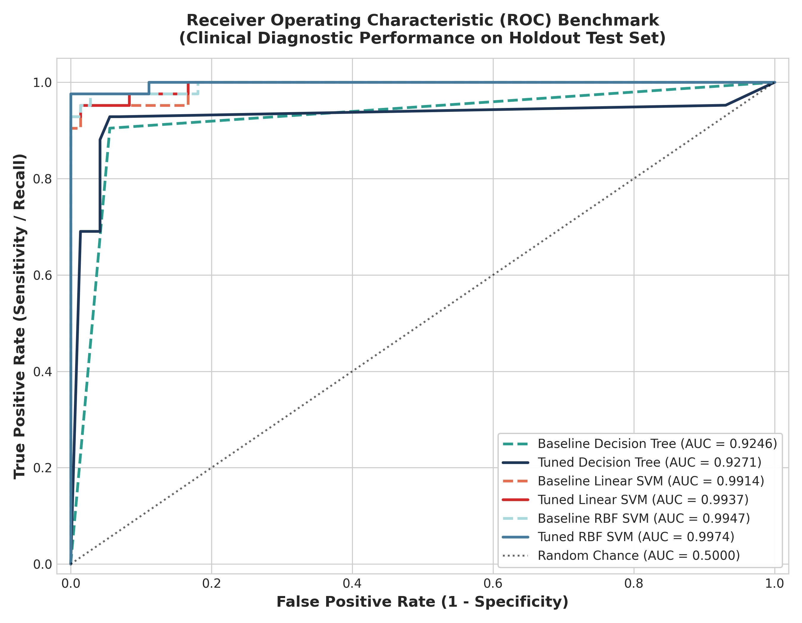
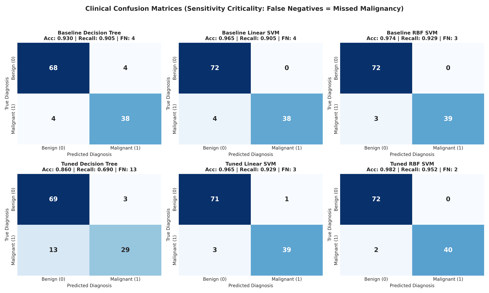
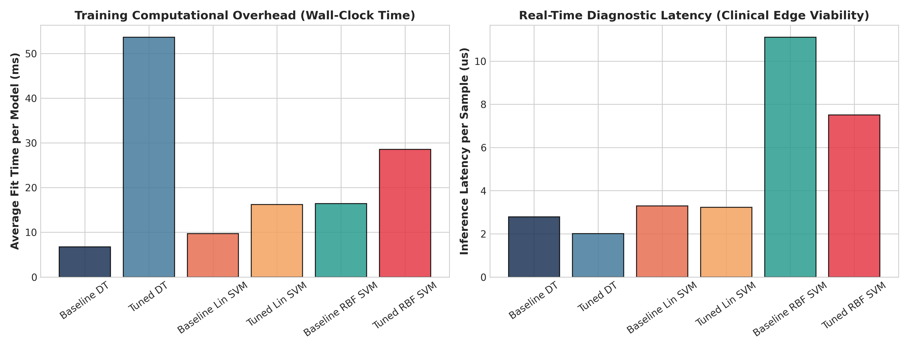
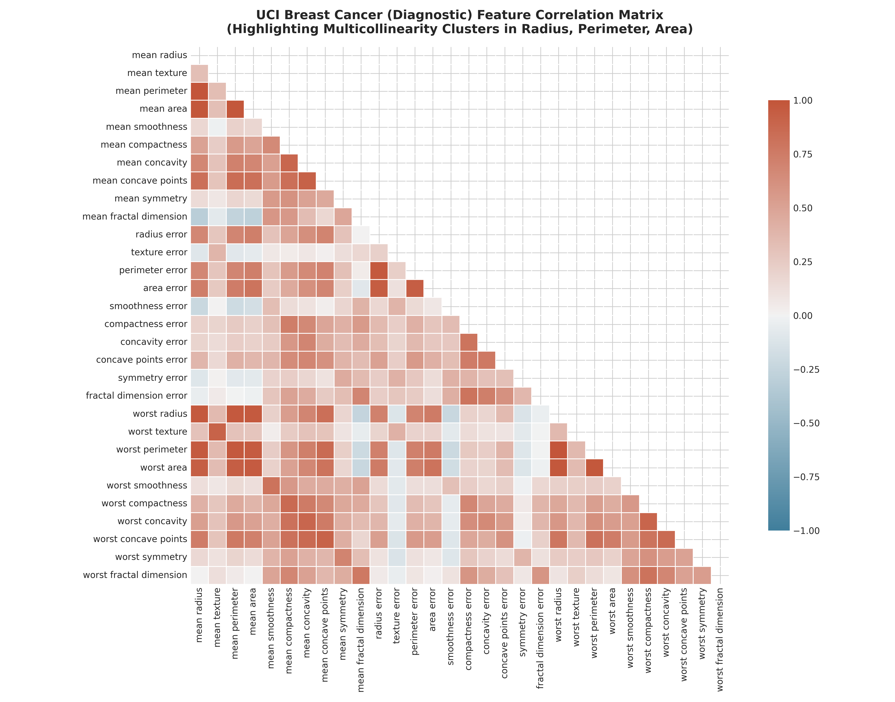
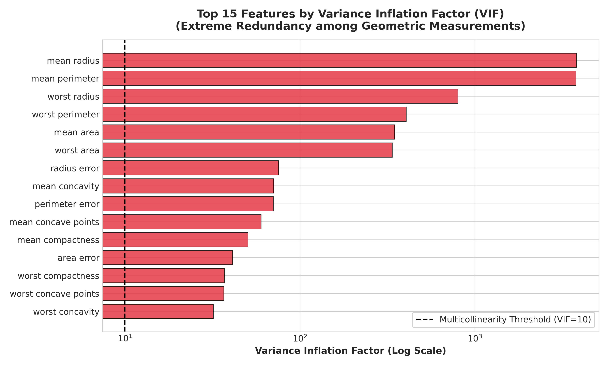
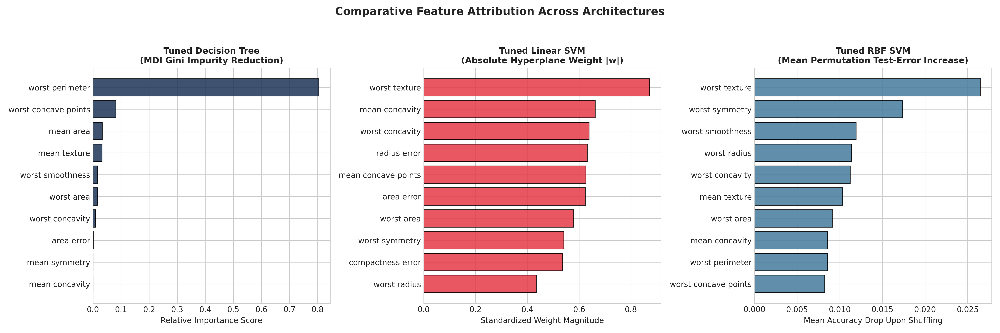

Interactive Cytological Diagnostic Simulator
Adjust cytological measurements or pick clinical presets. All three competing architectures—Decision Tree, Linear SVM, and RBF-Kernel SVM—evaluate the sample synchronously in real time.
Clinical Multi-Model Consensus
High Risk Malignant2D Latent Decision Boundary Studio (PCA Projected Space)
Compare how the three algorithmic architectures slice the 30-dimensional cytological space. The glowing crosshair represents your live patient specimen moving through the decision space in real time.
Comparative Performance Benchmarking & ROC Analysis
Rigorous validation across 6 competing models on the held-out stratified test set ($N=114$ samples). Explore ROC-AUC curves, confusion matrices, and latency profiles.

ROC-AUC Diagnostic Discrimination
The Receiver Operating Characteristic (ROC) plots the True Positive Rate (Sensitivity) against the False Positive Rate (1 - Specificity) across all discrimination thresholds.
Clinical Confusion Matrices Grid
In diagnostic cytology, a False Negative represents a lethal missed malignancy, while a False Positive triggers follow-up re-biopsy.

| Model Architecture | Accuracy | Sensitivity (Recall) | Specificity | Precision | F1-Score | ROC-AUC | MCC | Missed (FN) | False Alarm (FP) | Latency |
|---|---|---|---|---|---|---|---|---|---|---|
| Baseline Decision Tree | 92.98% | 90.48% | 94.44% | 90.48% | 0.9048 | 0.9246 | 0.8492 | 4 | 4 | 2.79 μs |
| Tuned Decision Tree | 85.96% | 69.05% | 95.83% | 90.62% | 0.7838 | 0.9271 | 0.6965 | 13 | 3 | 2.01 μs |
| Baseline Linear SVM | 96.49% | 90.48% | 100.00% | 100.00% | 0.9500 | 0.9914 | 0.9258 | 4 | 0 | 3.30 μs |
| Tuned Linear SVM | 96.49% | 92.86% | 98.61% | 97.50% | 0.9512 | 0.9937 | 0.9245 | 3 | 1 | 3.23 μs |
| Baseline RBF SVM | 97.37% | 92.86% | 100.00% | 100.00% | 0.9630 | 0.9947 | 0.9442 | 3 | 0 | 11.11 μs |
| Tuned RBF SVM (Optimal) | 98.25% | 95.24% | 100.00% | 100.00% | 0.9756 | 0.9974 | 0.9626 | 2 | 0 | 7.50 μs |

Edge Hardware & Diagnostic Latency
For deployment on edge digital pathology scanners, latency must remain in the microsecond range per tile.
Cytological Profiling & Multicollinearity Studio
Rigorous exploration of biological geometric coupling. 21 feature pairs exceed $|r| \ge 0.90$ with VIF reaching 3,806.
Pearson Correlation Heatmap
30 × 30 Matrix
Dense clusters between radius, perimeter, and area reflect algebraic biological formulas ($P = 2\pi r$, $A = \pi r^2$).
Top Variance Inflation Factors (VIF)
Threshold VIF = 10
Logarithmic VIF scale demonstrates that while OLS regression fails under this collinearity, L2-regularized SVM and trees handle it gracefully.
Feature Importance Extraction & Structural Complexity Critique
Compare MDI Gini impurity reduction against Linear SVM hyperplane weights and RBF permutation sensitivity.

Decision Tree (Gini MDI)
Extreme Sparsity: Over 80% of tree decisions hinge on a single variable, making the tree fragile to edge noise.
Linear SVM (|w| Weights)
Transparent Scorecard: Standardized coefficients allow pathologists to verify risk contributions before surgery.
RBF SVM (Permutation Drop)
Non-Linear Morphological Ensembles: High-order interactions between cell border roughness drive superior accuracy.
Course Based Design Project Submission Hub
Official artifacts prepared for MACSE504 evaluation in accordance with VIT guidelines.
Publication-Grade Academic PDF Report
Comprehensive 6-page formal report containing registration credentials, question statement, system architecture, paired source code and outputs, mathematical derivations, and clinical inference.
Executable Jupyter Notebook (.ipynb)
Fully formatted and executed notebook with all 8 code execution cells, output tables, markdown discussions, and reproducible random states (seed = 42).
GitHub Public Code Repository
Version-controlled repository hosting the complete source code, automated scripts, figures, markdown reports, and Vercel deployment configurations.